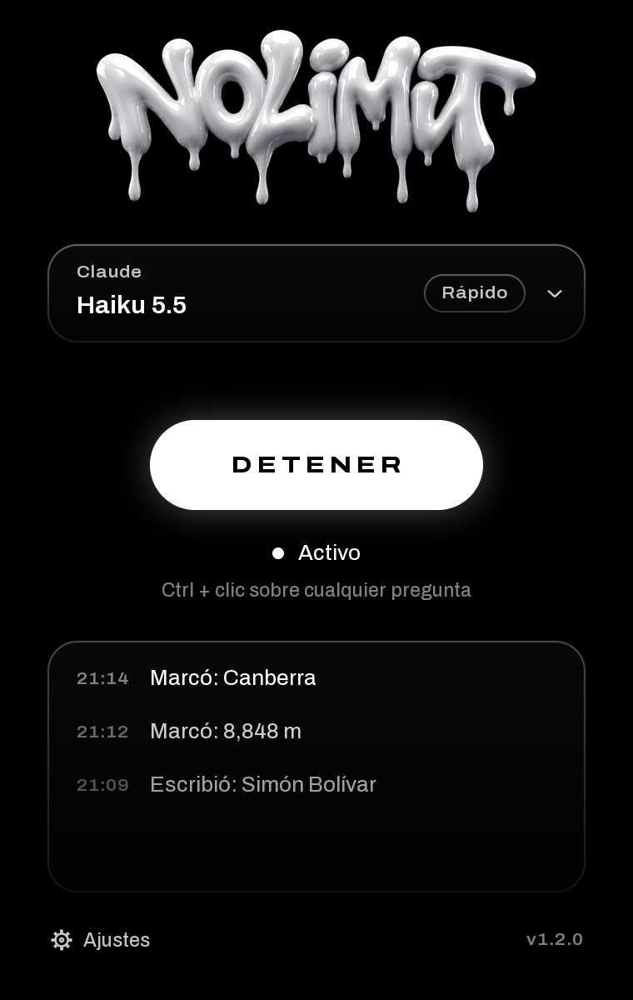

NO LIMIT
NO LIMIT
Contesta preguntas de la pantalla con un Ctrl + clic
DESCARGAR
CÓMO SE USA
-
01
INSTÁLALA
Abre el archivo que bajaste. Si Windows dice “Windows protegió tu PC”, toca Más información y luego Ejecutar de todas formas.
-
02
PEGA TU CLAVE
Elige el modelo y pega tu clave. La de Gemini es gratis en Google AI Studio. Las de Claude y ChatGPT necesitan saldo.
-
03
TOCA INYECTAR
La ventana se va junto al reloj y sigue activa ahí. Toca su icono para abrirla; clic derecho para detenerla o cerrarla.
-
04
CTRL + CLIC
Pon el puntero sobre la pregunta y haz Ctrl + clic. En opción múltiple marca la respuesta. En preguntas abiertas la escribe sola.
NO ESTORBA
Jugando, no hace nada
Si tienes un juego en pantalla completa, el Ctrl + clic no hace nada. Tampoco si dejas Ctrl apretado para agacharte.
Escondida casi no gasta
Junto al reloj no dibuja nada. Solo trabaja el ratito en que lee la pregunta.
No se mete en nada
No inyecta nada en otros programas ni en la memoria. Solo mira la pantalla cuando haces Ctrl + clic.